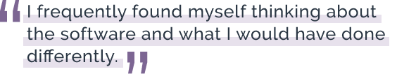
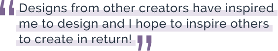

About Me.
My journey to UX.
In college is where I started my first business with the creation of a mobile application. This is what truly sparked my passion for product design. Flashback even further, and I can still hear my parents yelling for me not to scratch the floors while rearranging yet another room in the house. It was amazing the things 9-year-old Sylvia could move when I wanted to redesign a room to match my sketches for the new layout I had envisioned. And yes, the sketches included, maybe not so precise, measurements. I think I still have the blueprints for my vision of the kitchen remodel somewhere. Mom/Pop, let me know if you’re interested! The passion to design may have started with interior design, but didn’t stop there. Thinking back, I was designing logos for myself before I even had a signature.
The detour.
Prior to design, I worked in Wealth Management where I managed the book of business for a multimillion-dollar producing team of financial advisors. In this role is where I learned the value of research and thoroughly enjoyed researching companies and the stock market. Working in such a fast-paced environment, addressing clients and my team daily, left me with a wide range of skill sets especially communication and customer service. In addition to that role, I was a complex coach, meaning a mentor to all Service Associates across the 4 state complex.
Working in finance, there would always be updates to the software we used for everyday tasks. After getting familiar with each new update or platform I would find myself wishing I could have been a part of the creation process. The new software always seemed like the user was never tested. I frequently found myself thinking about the software and what I would have done differently. Deep down I always knew I needed a job that would allow me to create. This led me to enroll in the Bloc/Thinkful Design Track Bootcamp where I have been eagerly learning as much as possible. While at my UI UX Design apprenticeship with Bloc/Thinkful I have created multiple customer-driven projects where I have worked as the UX researcher, UI designer, and developer reporting to a senior product designer. One thing that excites me most about UX Design is that there is always more to learn as the environment is constantly evolving.
A little more about me.
I’ve always been a problem solver and enjoyed implementing those skills through finance, or side projects like rebuilding old laptops just for the challenge. Now I solve problems through design. In a further description of myself, I’m an animal, planet loving vegetarian. Growing up I would help my dad make wine and now for fun, I enjoy brewing beer with my partner. Living in Colorado has given me and my two dogs the opportunity to really appreciate the mountains and nature. I also enjoy looking at and photographing the street art Denver has to offer. Designs from other creators have inspired me to design and I hope to inspire others to create in return!
Did I mention I love coffee… oh, you too? Let’s connect over a cup!